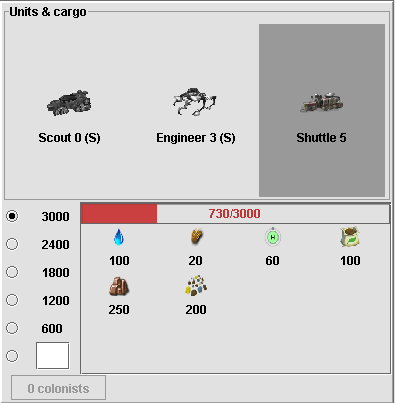

Units and cargo
This panel displays the units that are currently in the selected colony.
The upper panel displays units that are in the colony where the
lower panel displays active unit's current cargo if it can carry
resources. Cargo can be carried between the colony and the unit by
dragging its icon. Transfer quantity can be set by selecting one of
the predefined values or entering a custom value.
